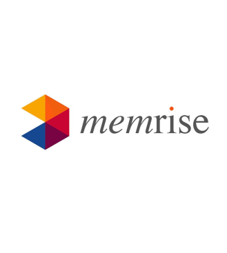

O site e aplicativo mobile Memrise utiliza a diversão como ingrediente principal para a aprendizagem. Por meio de um jogo que utiliza vídeos, áudio, mnemônicos (técnicas de memorização) e até memes, o site promete te ajudar a aprender desde o básico até o avançado do inglês (americano ou britânico) e outros 9 idiomas.
Assim como o Busuu, a empresa trabalha com o formato freemium e sua versão gratuita não compreende todas as lições. Porém, é possível ter acesso a mais informações que a versão free do concorrente, pois são oferecidos exercícios de revisão, além do vocabulário.
O Memrise funciona como uma rede social colaborativa, e você pode até convidar amigos para fazerem o curso juntos, seja em Android ou iOS (incuindo iPad).
